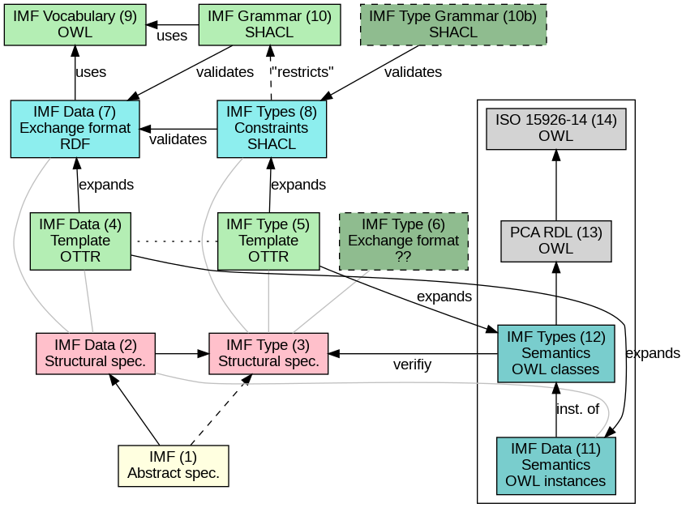
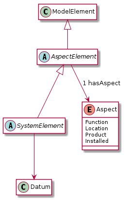
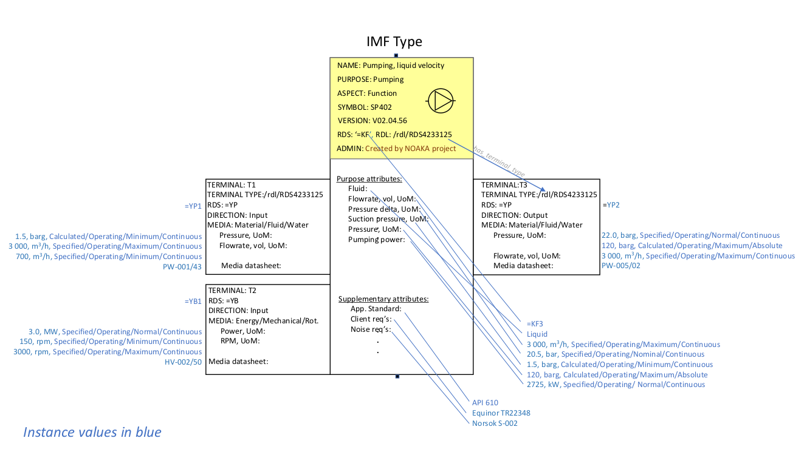

IMF and Semantic Technologies
Table of Contents
- 1. TODOs
- 2. Introduction
- 3. Namespace and identifiers and filenames
- 4. IMF Formal Specification
- 5. IMF Structural Specification
- 6. TODO IMF Vocabulary: OWL Ontology
- 7. TODO IMF Modelling Patterns: OTTR
- 8. Examples
- 9. Prefixes
- 10. Discussion
1 TODOs
- Input to this document
[0/5][ ]Define abstract model - AW[ ]Collect requirements to format from Mimir - ??[ ]Collect requirements to format from POC data - ??[ ]Collect requirements from Tyle[ ]Collect requirements to format for exchanging IMF models? How to sucessfully merge models? - ??
- Introduction
[ ]Concept figure for IT spec[ ]Define abstract/structural model for IMF, including an abstract language for data and types.- This model can have many implementations and different parts can be represented by different languages with different capabilities, for instance a type can be represented as a SHACL shape (for validation of IMF RDF data) and a OWL class (for semantic validation of the type wrt. to an RDL)
- Format specifications
[0/6][ ]Define OWL vocabulary - MGS[ ]Define exchange format- how to represent types
- do data object inherit or copy type data?
[ ]Define SHACL grammar - MGS[ ]Define OTTR templates for creating data - MGS[ ]Define OTTR templates for translating to SHACL - MGS[ ]?? Define JSON/JSON-LD format (using JSON-LD context object) - MGS + DH
- Tools
[0/2][ ]Update Mimir output format - DH?[ ]Update Tyle output format
- Semantics
[0/2][ ]Define Abstract translation of IMF data model to ISO 15926-14 - AW + JWK[ ]Define OTTR templates for translating IMF to ISO 15926-14 - DNV + MGS
- Examples/Demonstrations
[0/5][ ]Implement example from Erlend - MGS[ ]Test validation of IMF data against SHACL grammar - MGS[ ]?? Demonstrate use of OWL ontology - MGS[ ]?? Demonstrate use of OTTR templates for creating IMF data - MGS[ ]?? Test visualisation of RDF on IMF data - MGS
- Other
[0/1][ ]?? Use JSON framing - DH? + MGS
1.1 Notes: IMF vocabulary
1.1.1 From Mimir
[ ]created - date -> pav:createdOn[ ]createdBy - string? -> pav:createdBy[ ]lastUpdated - date -> pav:lastUpdateOn[ ]updatedBy - string -> pav:contributedBy[ ]rds - string[ ]domain: "mimir:domain": "runir.net",[ ]owl:versionInfo - definition: "The annotation property that provides version information for an ontology or another OWL construct". Rather use pav:version?[ ]hasAspect[ ]hasInTerminal[ ]hasOutTerminal[ ]hasParent[ ]lis:hasPhysicalQuantity[ ]mimir:type
2 Introduction
2.1 TODO IMF IT Specification Document Overview
Todos:
- collapse data and types whereever approprioate
This is loosely inspired by the OWL 2 Web Ontology Language Document Overview https://www.w3.org/TR/2012/REC-owl2-overview-20121211/.
This document defines the following:
- A structural specification of IMF, or IMF datamodel, including IMF Data (2) and IMF Types (3) based on the formal abstract specification of IMF (1).
- The IMF Vocabulary (9) and IMF Grammar (10) are an implementation of (parts of) the Structural specification (2+3).
- IMF Data (2) is represented in different forms:
- The IMF Data exchange format (7) is RDF as specified by the IMF grammar (10), specified in the form of a set of SHACL shapes, and uses the IMF vocabulary (9), specified in the form of an OWL ontology.
- OTTR templates represent an implementation of the structural specification of IMF Data, and may be used to generate the IMF Data exchange format (7) and OWL instances as according to the ISO 15926-14 ontology (11).
- IMF types (3) are represented in different formats:
- An exchange format for IMF types (6) should be specified.
- SHACL shapes (8) capture the constraint nature of IMF types and may be used validate the IMF Data Exchange format (7).
- OWL class definitions (12) following the ISO 15926-14 OWL ontology capture the semantics of the types and may be used for semantic validation of the types and their instances.
- OTTR templates (5) represent an implementation of the structural specification of types, and allow for a succinct definition of the translation into SHACL shapes (8) and OWL class definitions (12).
- It should be possible to define a grammar (10b) for IMF Type SHACL constraints, in the form of a subset or dialect of the SHACL standard.
The (generated) diagram below illustrates the main relations between the parts of the specification. Green boxes indicates a single "schematic" specifications. Blue boxes indicate specification of multiple multiple occurrences.

2.2 TODO W3C technology
[Explain and motivate the use of semantic technologies?]
2.2.1 RDF
RDF is an abstract data model defined as an open standard by the W3C.
RDF may be serialised in different serialisation formats such as RDF/XML (based on XML), JSON-LD (based on JSON), Turtle (a favorite amongst many familiar with RDF due to its ease of reading and writing), or N-Triples (a very simple format only appropriate for software).
3 Namespace and identifiers and filenames
The namespace for resources used by the formalisation of the IMF using semantic technologies for publicly available and shared resources should be:
http://ns.imfid.org/imf#
Suggestion for an identifier schema for different IMF ontology versions:
http://ns.imfid.org/ontology/[yyyy-mm-dd]/[ontology-name]
The ontology will be published at their address. The resources
(classes, properties, individuals) are made resolvable by publishing a
merged ontology of all ontology files at the imf namespace address.
4 IMF Formal Specification
Note: This section is excerpts taken from the ongoing work on the IMF manual (16/11) and may be out of sync.
4.1 TODOs [5/6] todos
[X]?? drop System element categories definition[X]?? add something like, in the definition of System element: "A system element is either a (System) Block, Terminal or Interface point."[ ]"A system element scheme is a blueprint from which (instances of) system elements may be created. A system element created from a system element scheme gets the aspect and the attributes as required by the system element scheme specification".[X]A function block is a block with the aspect function. A function block holds requirements to purpose.[X]"The purpose of a system or a system element is specified by the activities that the system performs or achieves. The IMF relies on external reference data libraries of the definition of these activities."[X]include "Breakdown" in partOf?
4.2 Core components
- System
- Combination of interacting elements organized to achieve one or more stated purpose.
- System Element
- Member of a set of elements that constitute a system. A System Element is is either a System Block, a Terminal or an Interface point.
- Purpose
- The purpose of a system or a system element is specified by the activities that the system performs or achieves. IMF relies on external reference data libraries of the definition of these activities.
- Breakdown
- A breakdown is a rule by which a system element can be divided into parts according to a given perspective.
- Aspect
- An aspect is a system perspective that provides guideline for specifying a breakdown relation on system element and properties to the elements in the breakdown relation. An aspect is a particular way of viewing a facility asset. Different aspects have no overlap in information.
- Aspect element
- An Aspect element is a System Element with exactly one accociated Aspect.
4.2.1 ??
- System element categories
- A system element category is a scheme used as a blueprint to instantiate System element schemes. There are three system element categories: Block, Terminal, Interface point.
- System element scheme
- A System element scheme is an instance of a system element category with a defined set of attributes, including an attribute which defines a unique aspect.
4.3 Aspects
- Function aspect
- The Function aspect is an aspect with the activity perspective on breakdown, providing information about required activity, performance, and function.
- Product aspect
- The Product aspect is an aspect with the artifact, or assembly, perspective on breakdown. It is about the specification of a solution that is intended to perform the activity.
- Location aspect
- The Location aspect is an aspect with the spatial perspective on breakdown. It is about the spatial envelope, the size and shape, of the specified pump and the requirements imposed by the location.
- Installed aspect
- The Installed aspect is an aspect with the installed artifact, or installed assembly, perspective on breakdown. It is about information about the actual pump, e.g., serial number, run hours, and status.
4.4 System elements
4.4.1 Block
- System Block
- A System Block (or just Block) B is an object with a collection of attributes used to describe an entity.
- Function Block
- Product Block
- Location Block
- Installed Block
4.4.2 Terminal
- Terminal
- A Terminal is an object with a collection of attributes used to describe the input or output of a Block, and hence its boundaries.
- Function Terminal
- Product Terminal
- Location Terminal
- Not used
- Installed Terminal
4.4.3 Interface point
- Interface point
- An Interface Point is an object with a collection of attributes used to specify the condition for connecting one Block B1 and its Terminal T1, to another Block B2 and its Terminal T2.
- Function Interface Point
- Product Interface Point
- Location Interface Point
- Not used
- Installed Interface Point
4.5 Relationships between system elements
4.5.1 hasTerminal
The hasTerminal relation is a specification of a connection between a block and a terminal of the same aspect.
- FB->FT
- hasTerminal(FB,FT) is a specification to the effect that the stream state of FT is the input/output of the purpose activity of FB.
- PB->PT
- hasTerminal(PB,PT) is a specification to the effect that the artifactterminal of PT is an input/output terminal of the artifact of PB.
- LB->LT
- hasTerminal(LB,LT) is a specification to the effect that the spatial position of the terminal is placed on the spatial extension of the artifact.
- IB->IT
- hasTerminal(IB,IT) documents that the installed artifact terminal IT is an input/output terminal of the installed artifact PB.
4.5.2 hasPart
hasPart is a specification of a connection between two blocks of the same aspects.
- FB->FB
- hasPart(FB1,FB2) is a specification to the effect that purpose activity of FB2 is a sub-activity of that of FB1.
- PB->PB
- hasPart(PB1,PB2) is a specification to the effect that the artifact of PB2 is a sub-assembly of the artifact of PB1.
- LB->LB
- hasPart(LB1,LB2) is a specification to the effect that the location of LB2 is located in the location of LB1.
- IB->IB
- hasPart(IB1,IB2) documents that the installed artifact IB2 is sub-assembly of the installed artifact IB1.
4.5.3 connectedTo
The connectedTo relation is a specification of a connection between two terminals of the same aspect.
- FT-(FIP)-FT
- connectedTo(FT1,FT2,FIP) is a specification to the effect that the stream state of FT1 is equal to that of FT2 and satisfies the requirement in FIP.
- PT-(PIP)-PT
- connectedTo(PT1,PT2,PIP) is a specification to the effect that the artifact terminal of PT1 is physically connected to the artifact terminal of PT2 and satisfies the requirement in PIP.
- LT-(LIP)-LT
- connectedTo(LT1,LT2,LIP) is a specification to the effect that the location of the terminal of LT1 matches the location of the terminal of LT2 and satisfies the requirement in LIP.
- IT-IT
- connectedTo(IT1,IT2) documents that IT1 is physically connected to IT2.
4.5.4 fulfilledBy
The fulfilledBy relation is a specification of a connection between two blocks (or two terminals) of different aspects.
- FB->PB
- fulfilledBy(FB,PB)is a specification to the effect that the artifact of PB fulfills the purpose of FB.
- FT->PT
- fulfilledBy(FT,PT)is a specification to the effect that the artifact terminal of PT contains the stream state of FT.
- LB->PB
- PB artifact fulfills the location requirements of LB. fulfilledBy(LB,PB) is a specification to the effect that the artifact of PB fulfills the location requirements of LB.
- LT->PT
- fulfilledBy(LT,PT) is a specification to the effect that the artifact terminal of LT fulfills the location requirements of PT.
- PB->IB
- fulfilledBy(PB,IB) is a specification to the effect that the installed artifact IB fulfills the artifact specification PB. fulfilledBy(PB,IB) is a specification to the effect that the installed artifact of IB fulfills the artifact specifications of PB.
- PT->IT
- fulfilledBy(PT,IT) is a specification to the effect that the installed artifact terminal IT fulfills the terminal specifications of PT.
5 IMF Structural Specification
The structural specification is a format and application independent data model specification of the formal specification of IMF. The structural specification aims to faithfully represent the intentions of the formal specification while also including the specification of how, e.g., metadata about objects and attributes and attribute values are represented, which the formal specification does not contain. The purpose of the structural specification is to be a common language and format for developing concrete serialisation formats for IMF and serve as documentation for application developers.
5.1 Diagram legend
The specification consists of a series of partially overlapping diagrams. The combined diagram is presented in Figure …
The diagrams are UML class diagrams are drawn using PlantUML restricted to the following elements:
- UML classes, marked with the icon "C".
- Abstract UML classes, marked with an icon "A", are UML classes that are not intended to be instantiated.
- Enumerations, marked with the icon "E", are used to represent UML classes with a limited list of instantiations and where the instantiations are defined in the IMF language.
- Subclass relationships between classes, directed relations with an open arrow.
- Directed associations (relations) between classes, which are marked with a name and possibly a cardinality. If no cardinality is given, then the cardinality is 0–many.
Here is an example:

Note: The structural specification is described by a series of diagrams, each focus on a specific part. In the case that a class is used in multiple diagrams, only one diagram contains the full specification of the class, while the other diagrams only contain the class name. The diagram that contains the complete specification combines all diagrams and contains all information.
5.2 Model
Entity is the most general construct in the structural specification. Everything is an entity. No fields or attributes are required for Entity, e.g., an Entity is not required to have in id.
An AnnotatedEntity is an Entity that has an identifier and additional metadata and provenace data as specified by the diagram. An Entity that is not an AnnotatedEntity may only exist through some relation to an AnnotatedEntity.
A Model is a collection of AnnotatedEntities and their dependent entities. These AnnotatedEntities may be called ModelElements. ModelElements are Entities that can occur in Models and are hence those AnnotatedEntities that may be exchanged as part of a Model.
Note: most subclass relationships to Entity are not depicted in diagrams as this make them difficult to read.

5.2.1 TODOs [0/1] todos
[ ]Decide on required and/or useful set of provenance fields.
5.3 System Elements
Every AspectElement has exacty one Aspect.
Every SystemElement is a AspectElement. A SystemElement is associated 0–many Datums. The structure of Datums is described below.

5.4 Attribute
An Attribute is a specification of Datums. An Attribute must specify a quality, and may specify a value with an accociated unit of measure (uom). An Attribute may be classified at most one of each of the Attribute classifiers Provenance, Range, Regularity and Scope.
A Datum is an instantiation of an Attribute and must specify a value and a unit of measure as according to the Attribute specification.
Note: The specification of Attributes is currently basic. A more thorough analysis of requirements for expressing Attribute is planned for future releases.

5.4.1 TODOs [0/2] todos
[ ]Is this a good way of modelling attributes and datums?[ ]Does a datum copy the attribute values or refer to the attribute (similar discussion applies to types in general).
5.5 Types
Types define a blueprint from which SystemElements are created. There two kinds of Types: BlockType and TerminalType each representing blueprints for Blocks and Terminals, respectively. Types specify fields and relationships that must also hold for its instances. A BlockType may specify fields such as RDS string, purpose and symbol and Terminals by relationships to TerminalTypes. A TerminalType specifies a direction and a Medium.
A Type may include multiple AttributeGroups. An AttributeGroup is a collection of AttributeTypes.
An AttributeType is an Attribute with additional constraints associated. These constraints may specify premissible values for the Attribute in different ways, e.g., by specifying a list of legal values, a range of values (in the case of a numerical values), legal datatype, regular expression, and so on. The expressivity of constraints for AttributeTypes will be defined upon a thorough analysis including both requirements from SMEs, application developers and the expressivity of suitable constraint languages.
An AttributeGroup is an AnnotatedEntity that is used to collect Attributes that naturally belong together to support ease of reuse. An AttributeGroup also serves the purpose of grouping together Attributes for presentational purposes, similarly as document sections in a data sheet does.
Instances may be created from types in at least two ways:
- An instance is created from a copy of the type, hence the instance will explicitly contain the fields and relationships specified by its type.
- An instance is created by referring to its type with a specified relationship that captures the semantics of the instantiation.
Both cases exibit different issues with regards to synchronisation and versioning. For case 1. an instance may evolve independently of its type, i.e., any updates to the instance will not affect the type (and vise versa) unless specific measures to avoid this is specified. For case 2, updates to a type will also affect all its instances.

5.6 Instances
The strucutral specification of the different SystemElements closely follow the formal specification.
The connectedTo relation between InTerminal and OutTerminal may either be a binary relationship between an InTerminal and an OutTerminal, or a ternary relationsship between an InTerminal, an OutTerminal and an InterfacePoint. The latter form is represented in the diagram with a diamond.

5.7 Complete Specification

6 TODO IMF Vocabulary: OWL Ontology
The IMF vocabulary is defined by an OWL ontology, also called the IMF ontology.
The IMF ontology is specified by this document using a series of code snippets which are compiled to different OWL files serialised in RDF Turtle syntax.
In order not to duplicate and to avoid synchronisation issues, the definition and description of the ontology and its contents are put directly in the ontology sources; please read these for more information.
6.1 Ontology source
<http://ns.imfid.org/imf> a owl:Ontology ;
owl:versionIRI <http://ns.imfid.org/20221118/imf> ;
owl:imports
<http://ns.imfid.org/20221118/imf-top> ,
<http://ns.imfid.org/20221118/imf-systemelements> ,
<http://ns.imfid.org/20221118/imf-aspects> ;
skos:prefLabel "Information Modelling Framework Ontology " ;
skos:altLabel "IMF ontology" ;
skos:scopeNote """
This is the main IMF ontology and its main point of entry. This
ontology document imports all other IMF sub-ontology documents, each
of which focus on one particular part of the ontology:
1. IMF Top defines the very high-level classes and properties of
the IMF ontology.
2. IMF Metamodel defines the metamodel for system elements and
their permissible properties.
3. IMF Aspects defines the aspects that are available to aspect
elements.
""";
.
6.2 Import hierarchy
The diagram displays the different ontology documents that the IMF ontology consists of and the import relations that exist between these.
6.3 IMF Top Sub-Ontology
6.3.1 Header
<http://ns.imfid.org/imf-top> a owl:Ontology ;
owl:versionIRI <http://ns.imfid.org/20221118/imf-top> ;
# owl:imports <http://www.w3.org/2004/02/skos/core> ;
skos:prefLabel "Information Modelling Framework Ontology: Top Ontology " ;
skos:altLabel "IMF top ontology" ;
skos:scopeNote """
This ontology defines the very core classes and relations of the
Information Modelling Framework (IMF) to provide a structure for
ontologies that extend this ontology.
""";
.
6.3.2 System
imf:System a owl:Class ; skos:prefLabel "System" .
6.3.3 SystemElement
imf:SystemElement a owl:Class ; rdfs:subClassOf imf:AspectElement ; skos:prefLabel "System Element" . imf:memberOf a owl:ObjectProperty , owl:FunctionalProperty ; rdfs:domain imf:SystemElement ; rdfs:range imf:System . [] ottr:of o-owl-ax:SubObjectSomeValuesFrom ; ottr:values ( imf:SystemElement imf:memberOf imf:System ) .
6.3.4 AspectElement
imf:AspectElement a owl:Class ; skos:prefLabel "Aspect Element"; . ### properties imf:hasAspect a owl:ObjectProperty ; skos:prefLabel "has aspect" ; skos:definition "Relates an Aspect Element to its Aspect."; rdfs:domain imf:AspectElement ; rdfs:range imf:Aspect .
6.3.5 Aspect
imf:Aspect a owl:Class ; skos:prefLabel "Aspect"; .
6.3.6 Additional axioms
[] ottr:of o-owl-ax:DisjointClasses ; ottr:values( ( imf:Aspect imf:AspectElement imf:System ) ) .
6.3.7 Structural relations
The following scope note is put on all following top-level relations:
skos:scopeNote """ This relation is used to enforce that subproperties respect this relation's definition. This must be enforced by introducing class axioms that locally further restrict the domain and range of the relation. """
imf:intraAspectRelation a owl:ObjectProperty ;
skos:prefLabel "intra-aspect relation";
rdfs:subPropertyOf skos:semanticRelation ;
rdfs:domain imf:AspectElement ;
rdfs:range imf:AspectElement ;
skos:definition "A generic relation between aspect objects of the same aspect" ;
.
imf:interAspectRelation a owl:ObjectProperty ;
skos:prefLabel "inter-aspect relation";
rdfs:domain imf:AspectElement ;
rdfs:range imf:AspectElement ;
rdfs:subPropertyOf skos:related ;
# owl:propertyDisjointWith imf:intraAspectRelation ; ## An error occurred during reasoning: Non-simple property or its inverse appears in disjoint properties axiom.
.
imf:hierarchicalRelation a owl:ObjectProperty ;
a owl:IrreflexiveProperty ;
skos:prefLabel "hierarchical relation";
rdfs:subPropertyOf skos:semanticRelation ;
rdfs:domain imf:AspectElement ;
rdfs:range imf:AspectElement ;
skos:definition "A generic hierachical relation that may be used to represent a breakdown structure." ;
.
imf:associativeRelation a owl:ObjectProperty ;
skos:prefLabel "associative relation";
rdfs:subPropertyOf skos:related ;
owl:propertyDisjointWith imf:hierachicalRelation ;
rdfs:domain imf:AspectElement ;
rdfs:range imf:AspectElement ;
skos:definition "A generic associative relation." ;
.
6.4 IMF System Element Sub-Ontology
6.4.1 Header
<http://ns.imfid.org/imf-systemelements> a owl:Ontology ;
owl:versionIRI <http://ns.imfid.org/20221118/imf-systemelements> ;
owl:imports <http://ns.imfid.org/20221118/imf-top> ;
skos:prefLabel "Information Modelling Framework Ontology: System Elements " ;
skos:altLabel "IMF metamodel ontology" ;
skos:scopeNote """
This ontology defines IMF's meta model which defines how
IMF models are represented.
""" ;
.
6.4.2 SystemElement
imf:SystemElement a owl:Class . [] ottr:of o-owl-ma:ClassPartition ; ottr:values ( imf:SystemElement ( imf:Block imf:Terminal imf:InterfacePoint ) ) .
6.4.3 Block
imf:Block a owl:Class ; rdfs:subClassOf imf:SystemElement ; skos:prefLabel "Block" ; .
6.4.4 Terminal
imf:Terminal a owl:Class ; rdfs:subClassOf imf:SystemElement ; skos:prefLabel "Terminal" ; skos:altLabel "Port", "Channel", "Input/Output" ; . imf:InputTerminal a owl:Class ; rdfs:subClassOf imf:Terminal ; skos:prefLabel "Input Terminal" ; skos:altLabel "Input" ; . imf:OutputTerminal a owl:Class ; rdfs:subClassOf imf:Terminal ; skos:prefLabel "Output Terminal" ; skos:altLabel "Output" ; . [] ottr:of o-owl-ma:ClassPartition ; ottr:values ( imf:Terminal ( imf:InputTerminal imf:OutputTerminal ) ) . imf:hasTerminal a owl:ObjectProperty ; rdfs:subPropertyOf imf:intraAspectRelation , imf:associativeRelation ; rdfs:domain imf:Block ; rdfs:range imf:Terminal ; skos:prefLabel "has terminal" ; skos:definition "The relation between a system and its terminals."; . imf:hasInputTerminal a owl:ObjectProperty ; rdfs:subPropertyOf imf:hasTerminal ; skos:prefLabel "has input terminal" ; rdfs:range imf:InputTerminal ; skos:definition "The relation between a system and its input terminals."; . imf:hasOutputTerminal a owl:ObjectProperty ; rdfs:subPropertyOf imf:hasTerminal ; skos:prefLabel "has output terminal" ; rdfs:range imf:OutputTerminal ; skos:definition "The relation between a system and its output terminals."; .
6.4.5 InterfacePoint
imf:InterfacePoint a owl:Class ; rdfs:subClassOf imf:SystemElement ; skos:prefLabel "Interface Point" ; skos:altLabel "Connection", "Junction" , "Transport" ; . imf:theInput a owl:ObjectProperty , owl:FunctionalProperty ; rdfs:domain imf:InterfacePoint ; rdfs:range imf:InputTerminal ; . imf:theOutput a owl:ObjectProperty , owl:FunctionalProperty ; rdfs:domain imf:InterfacePoint ; rdfs:range imf:OutputTerminal ; .
6.4.6 isPartOf / hasPart
imf:isPartOf a owl:ObjectProperty; a owl:FunctionalProperty ; rdfs:subPropertyOf imf:intraAspectRelation, imf:hierarchicalRelation, skos:broader ; rdfs:domain imf:Block ; rdfs:range imf:Block ; skos:prefLabel "is part of" ; skos:altLabel "has parent" ; . imf:hasPart a owl:ObjectProperty ; rdfs:subPropertyOf imf:intraAspectRelation, imf:hierarchicalRelation, skos:narrower ; owl:inverseOf imf:isPartOf ; skos:prefLabel "has part"; skos:altLabel "has child"; .
6.4.7 isConnectedTo
imf:isConnectedTo a owl:ObjectProperty ; rdfs:subPropertyOf imf:intraAspectRelation , imf:associativeRelation ; owl:propertyChainAxiom ( imf:theInput [ owl:inverseOf imf:theOutput ] ) ; skos:prefLabel "is connected to" ; rdfs:domain imf:OutputTerminal ; rdfs:range imf:InputTerminal ; .
6.5 IMF Aspects Sub-Ontology
6.5.1 Overview
6.5.2 Ontology source
6.5.2.1 Header
<http://ns.imfid.org/imf-aspects> a owl:Ontology ;
owl:versionIRI <http://ns.imfid.org/20221118/imf-aspects> ;
owl:imports <http://ns.imfid.org/20221118/imf-top> ;
skos:prefLabel "Information Modelling Framework Ontology: Aspects " ;
skos:altLabel "IMF aspects ontology" ;
skos:scopeNote """
This ontology defines IMF's central aspects.
""";
.
imf:LocationTerminal rdfs:subClassOf owl:Nothing .
imf:LocationInterfacePoint rdfs:subClassOf owl:Nothing .
6.5.2.2 Aspect
imf:Aspect a owl:Class .
6.5.2.3 Aspects
This is the current list of aspects:
| Aspect, IRIs | Prefix, string | Color, string |
|---|---|---|
| imf:FunctionAspect | '=' | '#FFFF00' |
| imf:LocationAspect | '+' | '#FF00FF' |
| imf:ProductAspect | '-' | '#00FFFF' |
| imf:InstalledAspect | '::' | '#FFFFFF' |
o-imf:Aspect [owl:NamedIndividual ?aspect, xsd:string ?symbol, xsd:string ?color] :: {
o-rdf:Type(?aspect, imf:Aspect) ,
ottr:Triple(?aspect, imf:prefix, ?symbol),
ottr:Triple(?aspect, imf:color, ?color)
} .
o-imf:AspectElementClass [owl:Class ?class, owl:NamedIndividual ?aspect] :: {
o-owl-ax:SubClassOf(?class, imf:AspectElement),
o-owl-ax:EquivObjectHasValue(?class, imf:hasAspect, ?aspect)
# o-owl-ax:SubObjectAllValuesFrom(?class, imf:intraAspectRelation, ?class)
} .
o-imf:SystemElementAspectClass [owl:Class ?class, owl:Class ?aspectClass, owl:Class ?systemElementClass] :: {
o-owl-ax:SubClassOf(?class, ?aspectClass),
o-owl-ax:SubClassOf(?class, ?systemElementClass)
} .
o-imf:InterAspectRelation[owl:ObjectProperty ?relation, owl:Class ?domain, owl:Class ?range] :: {
o-owl-ax:SubObjectPropertyOf(?relation, imf:interAspectRelation),
#o-owl-rstr:ObjectUnionOf(_:domain, ?domain),
#o-owl-rstr:ObjectUnionOf(_:range, ?range),
o-owl-ma:DomainRange(?relation, ?domain, ?range)
} .
6.5.2.4 fulfilledBy
imf:fulfilledBy a owl:ObjectProperty ; rdfs:subPropertyOf imf:InterAspectRelation ; owl:inverseOf imf:fulfills ; rdfs:domain imf:AspectElement ; rdfs:range imf:AspectElement ; .
6.6 Altogehter
15:56:10 INFO riot :: File: out/owl/imf.owl.ttl file:///home/martige/repo/imf-lab/imf-ontology/out/owl/imf.owl.ttl : 0.19 sec : 8 Triples : 41.24 per second 15:56:10 INFO riot :: File: out/owl/imf-aspects.owl.ttl file:///home/martige/repo/imf-lab/imf-ontology/out/owl/imf-aspects.owl.ttl : 0.02 sec : 89 Triples : 3,708.33 per second 15:56:10 INFO riot :: File: out/owl/imf-systemelements.owl.ttl file:///home/martige/repo/imf-lab/imf-ontology/out/owl/imf-systemelements.owl.ttl : 0.02 sec : 113 Triples : 6,647.06 per second 15:56:10 INFO riot :: File: out/owl/imf-top.owl.ttl file:///home/martige/repo/imf-lab/imf-ontology/out/owl/imf-top.owl.ttl : 0.01 sec : 64 Triples : 5,818.18 per second Total : 0.25 sec : 274 Triples : 1,113.82 per second
7 TODO IMF Modelling Patterns: OTTR
7.1 IMF Type patterns
o-imf:Type[
ottr:IRI ?id,
ottr:IRI ?class,
ottr:IRI ?aspect
] :: {
o-rdf:Type(?id, sh:NodeShape),
o-rdf:Type(?id, imf:Type),
ottr:Triple(?id, sh:targetClass, ?id),
o-imf:ShaclPropertyValueShape(?id, imf:hasAspect, ?aspect)
} .
o-imf:AttributeType[
ottr:IRI ?type,
! ottr:IRI ?classifier, # Purpose, Supplimentary, ???
! ottr:IRI ?quality, # Example: pressure
!? ottr:IRI ?provenance, # Required, Specified, Design, Calculated, Measured, Estimated, Set
!? ottr:IRI ?range, # Nominal, Normal, Average, Maximum, Minimum, Actual
!? ottr:IRI ?regularity, # Continuous, Absolute
!? ottr:IRI ?scope, # Design, Operating, Test
? rdfs:Literal ?value,
? ottr:IRI ?uom
] :: {
o-imf:ShaclPropertyValueShape(?type, (imf:hasAttribute, rdf:type), ?classifier),
o-imf:ShaclPropertyValueShape(?type, (imf:hasAttribute, rdf:type), ?quality),
o-imf:ShaclPropertyValueShape(?type, (imf:hasAttribute, p14:hasDatum, rdf:type), ?provenance),
o-imf:ShaclPropertyValueShape(?type, (imf:hasAttribute, p14:hasDatum, rdf:type), ?range),
o-imf:ShaclPropertyValueShape(?type, (imf:hasAttribute, p14:hasDatum, rdf:type), ?regularity),
o-imf:ShaclPropertyValueShape(?type, (imf:hasAttribute, p14:hasDatum, rdf:type), ?scope),
o-imf:ShaclPropertyValueShape(?type, (imf:hasAttribute, p14:hasDatum, p14:datumValue), ?value),
o-imf:ShaclPropertyValueShape(?type, (imf:hasAttribute, p14:hasDatum, p14:datumUOM), ?uom)
} .
o-imf:ShaclPropertyValueShape[
ottr:IRI ?nodeshape,
?path,
?value
] :: {
ottr:Triple(?nodeshape, sh:property, _:P) ,
ottr:Triple(_:P, sh:path, ?path),
ottr:Triple(_:P, sh:hasValue, ?value)
} .
7.2 IMF Data patterns
o-imf:System[
ottr:IRI ?id,
ottr:IRI ?type,
ottr:IRI ?aspect
] :: {
o-rdf:Type(?id, imf:System),
o-rdf:Type(?id, ?type),
ottr:Triple(?id, imf:hasAspect, ?aspect)
} .
o-imf:Terminal[
ottr:IRI ?id,
ottr:IRI ?type,
ottr:IRI ?aspect,
ottr:IRI ?system
] :: {
o-rdf:Type(?id, imf:System),
o-rdf:Type(?id, ?type),
ottr:Triple(?id, imf:hasAspect, ?aspect),
ottr:Triple(?system, imf:hasTerminal, ?id)
} .
o-imf:Attribute[
ottr:IRI ?id,
! ottr:IRI ?classifier, # Purpose, Supplimentary, ???
! ottr:IRI ?quality, # Example: pressure
!? ottr:IRI ?provenance, # Required, Specified, Design, Calculated, Measured, Estimated, Set
!? ottr:IRI ?range, # Nominal, Normal, Average, Maximum, Minimum, Actual
!? ottr:IRI ?regularity, # Continuous, Absolute
!? ottr:IRI ?scope, # Design, Operating, Test
rdfs:Literal ?value,
ottr:IRI ?uom
] :: {
ottr:Triple(?id, imf:hasAttribute, _:attr),
o-rdf:Type(_:attr, ?classifier),
o-rdf:Type(_:attr, ?quality),
ottr:Triple(_:attr, p14:hasDatum, _:datum),
o-rdf:Type(_:datum, ?provenance),
o-rdf:Type(_:datum, ?range),
o-rdf:Type(_:datum, ?regularity),
o-rdf:Type(_:datum, ?scope),
ottr:Triple(_:datum, p14:datumValue, ?value),
ottr:Triple(_:datum, p14:datumUOM, ?uom)
} .
8 Examples
8.1 Pumping Use Case
The example is currently just a proof of concept of how patterns of types and data can be used to produce SHACL that can validate the RDF data.
The example is inspired by the following diagram:

8.1.1 Types
o-imf:Type(ex:PumpingType, imf:Block, imf:Function) . o-imf:AttributeType(ex:myPumpingType, imf:Purpose, p14:Pressure, none, none, none, none, none, none). o-imf:Type(ex:PumpingOutTerminalType, imf:Terminal, imf:Function) . o-imf:AttributeType(ex:PumpingOutTerminalType, imf:Purpose, p14:Topsx, none, none, none, none, none, p14:cm). o-imf:AttributeType(ex:PumpingOutTerminalType, imf:Purpose, p14:Topsy, none, none, none, none, none, p14:cm).
8.1.2 Data
o-imf:System(ex:myPumping, ex:PumpingType, imf:Function) . o-imf:Attribute(ex:myPumping, imf:Purpose, p14:Pressure, p14:Calculated, p14:Maximum, p14:Absolute, p14:Operating, 120, p14:barg). o-imf:Terminal(ex:myPumpingOutTerminal, ex:PumpingOutTerminalType, imf:Function, ex:myPumping) . o-imf:Attribute(ex:myPumpingOutTerminal, imf:Purpose, p14:Topsx, p14:Calculated, p14:Maximum, p14:Absolute, p14:Operating, 12, p14:mm). o-imf:Attribute(ex:myPumpingOutTerminal, imf:Purpose, p14:Topsy, p14:Calculated, p14:Minimum, p14:Absolute, p14:Operating, 2, p14:mm).
8.1.3 Expand
8.1.3.1 Types
The type pattern instances expand to SHACL shape definitions.
SLF4J: Failed to load class "org.slf4j.impl.StaticLoggerBinder".
SLF4J: Defaulting to no-operation (NOP) logger implementation
SLF4J: See http://www.slf4j.org/codes.html#StaticLoggerBinder for further details.
# [INFO] Fetched template: http://tpl.ottr.xyz/owl/axiom/0.1/SubClassOf
# [INFO] Fetched template: http://tpl.ottr.xyz/owl/macro/0.1/DomainRange
# [INFO] Fetched template: http://tpl.ottr.xyz/rdf/0.1/Type
# [INFO] Fetched template: http://tpl.ottr.xyz/owl/axiom/0.1/EquivObjectHasValue
# [INFO] Fetched template: http://tpl.ottr.xyz/owl/axiom/0.1/SubObjectPropertyOf
# [INFO] Fetched template: http://tpl.ottr.xyz/owl/axiom/0.1/EquivalentClass
# [INFO] Fetched template: http://tpl.ottr.xyz/owl/axiom/0.1/SubPropertyOf
# [INFO] Fetched template: http://tpl.ottr.xyz/owl/restriction/0.1/ObjectHasValue
# [INFO] Fetched template: http://tpl.ottr.xyz/owl/restriction/0.1/HasValue
# [INFO] Fetched template: http://tpl.ottr.xyz/owl/util/0.1/ValueRestriction
# [WARNING] Unused parameter in template http://ns.imfid.org/templates/Type. The template has a parameter ?class : ottr:IRI (arg no. 2) which does not occur in the pattern of the template.
rapper: Parsing URI file:///home/martige/repo/imf-lab/imf-ontology/out/example/pumping/types.stottr.temp with parser turtle
rapper: Serializing with serializer turtle
rapper: Parsing returned 72 triples
@prefix rdf: <http://www.w3.org/1999/02/22-rdf-syntax-ns#> .
@prefix imf: <http://ns.imfid.org/imf#> .
@prefix pav: <http://purl.org/pav/> .
@prefix o-rdf: <http://tpl.ottr.xyz/rdf/0.1/> .
@prefix o-owl-rstr: <http://tpl.ottr.xyz/owl/restriction/0.1/> .
@prefix owl: <http://www.w3.org/2002/07/owl#> .
@prefix xsd: <http://www.w3.org/2001/XMLSchema#> .
@prefix skos: <http://www.w3.org/2004/02/skos/core#> .
@prefix rdfs: <http://www.w3.org/2000/01/rdf-schema#> .
@prefix p14: <http://example.com/P14#> .
@prefix ex: <http://example.com#> .
@prefix sh: <http://www.w3.org/ns/shacl#> .
@prefix o-imf: <http://ns.imfid.org/templates/> .
@prefix ottr: <http://ns.ottr.xyz/0.4/> .
@prefix o-owl-ma: <http://tpl.ottr.xyz/owl/macro/0.1/> .
@prefix o-owl-ax: <http://tpl.ottr.xyz/owl/axiom/0.1/> .
@prefix shsh: <http://www.w3.org/ns/shacl-shacl#> .
ex:PumpingOutTerminalType
a imf:Type, sh:NodeShape ;
sh:property [
sh:hasValue p14:Topsx ;
sh:path (imf:hasAttribute
rdf:type
)
], [
sh:hasValue imf:Purpose ;
sh:path (imf:hasAttribute
rdf:type
)
], [
sh:hasValue p14:cm ;
sh:path (imf:hasAttribute
p14:hasDatum
p14:datumUOM
)
], [
sh:hasValue p14:Topsy ;
sh:path (imf:hasAttribute
rdf:type
)
], [
sh:hasValue imf:Purpose ;
sh:path (imf:hasAttribute
rdf:type
)
], [
sh:hasValue imf:Function ;
sh:path imf:hasAspect
], [
sh:hasValue p14:cm ;
sh:path (imf:hasAttribute
p14:hasDatum
p14:datumUOM
)
] ;
sh:targetClass ex:PumpingOutTerminalType .
ex:PumpingType
a imf:Type, sh:NodeShape ;
sh:property [
sh:hasValue imf:Function ;
sh:path imf:hasAspect
] ;
sh:targetClass ex:PumpingType .
ex:myPumpingType
sh:property [
sh:hasValue p14:Pressure ;
sh:path (imf:hasAttribute
rdf:type
)
], [
sh:hasValue imf:Purpose ;
sh:path (imf:hasAttribute
rdf:type
)
] .
8.1.3.2 Data
The data pattern instances expand to RDF.
SLF4J: Failed to load class "org.slf4j.impl.StaticLoggerBinder".
SLF4J: Defaulting to no-operation (NOP) logger implementation
SLF4J: See http://www.slf4j.org/codes.html#StaticLoggerBinder for further details.
# [INFO] Fetched template: http://tpl.ottr.xyz/owl/axiom/0.1/SubClassOf
# [INFO] Fetched template: http://tpl.ottr.xyz/owl/macro/0.1/DomainRange
# [INFO] Fetched template: http://tpl.ottr.xyz/rdf/0.1/Type
# [INFO] Fetched template: http://tpl.ottr.xyz/owl/axiom/0.1/EquivObjectHasValue
# [INFO] Fetched template: http://tpl.ottr.xyz/owl/axiom/0.1/SubObjectPropertyOf
# [INFO] Fetched template: http://tpl.ottr.xyz/owl/axiom/0.1/EquivalentClass
# [INFO] Fetched template: http://tpl.ottr.xyz/owl/axiom/0.1/SubPropertyOf
# [INFO] Fetched template: http://tpl.ottr.xyz/owl/restriction/0.1/ObjectHasValue
# [INFO] Fetched template: http://tpl.ottr.xyz/owl/restriction/0.1/HasValue
# [INFO] Fetched template: http://tpl.ottr.xyz/owl/util/0.1/ValueRestriction
# [WARNING] Unused parameter in template http://ns.imfid.org/templates/Type. The template has a parameter ?class : ottr:IRI (arg no. 2) which does not occur in the pattern of the template.
rapper: Parsing URI file:///home/martige/repo/imf-lab/imf-ontology/out/example/pumping/data.stottr.temp with parser turtle
rapper: Serializing with serializer turtle
rapper: Parsing returned 37 triples
@prefix rdf: <http://www.w3.org/1999/02/22-rdf-syntax-ns#> .
@prefix imf: <http://ns.imfid.org/imf#> .
@prefix pav: <http://purl.org/pav/> .
@prefix o-rdf: <http://tpl.ottr.xyz/rdf/0.1/> .
@prefix o-owl-rstr: <http://tpl.ottr.xyz/owl/restriction/0.1/> .
@prefix owl: <http://www.w3.org/2002/07/owl#> .
@prefix xsd: <http://www.w3.org/2001/XMLSchema#> .
@prefix skos: <http://www.w3.org/2004/02/skos/core#> .
@prefix rdfs: <http://www.w3.org/2000/01/rdf-schema#> .
@prefix p14: <http://example.com/P14#> .
@prefix ex: <http://example.com#> .
@prefix sh: <http://www.w3.org/ns/shacl#> .
@prefix o-imf: <http://ns.imfid.org/templates/> .
@prefix ottr: <http://ns.ottr.xyz/0.4/> .
@prefix o-owl-ma: <http://tpl.ottr.xyz/owl/macro/0.1/> .
@prefix o-owl-ax: <http://tpl.ottr.xyz/owl/axiom/0.1/> .
@prefix shsh: <http://www.w3.org/ns/shacl-shacl#> .
ex:myPumping
imf:hasAspect imf:Function ;
imf:hasAttribute [
p14:hasDatum [
p14:datumUOM p14:barg ;
p14:datumValue 120 ;
a p14:Absolute, p14:Calculated, p14:Maximum, p14:Operating
] ;
a p14:Pressure, imf:Purpose
] ;
imf:hasTerminal ex:myPumpingOutTerminal ;
a ex:PumpingType, imf:System .
ex:myPumpingOutTerminal
imf:hasAspect imf:Function ;
imf:hasAttribute [
p14:hasDatum [
p14:datumUOM p14:mm ;
p14:datumValue 12 ;
a p14:Absolute, p14:Calculated, p14:Maximum, p14:Operating
] ;
a p14:Topsx, imf:Purpose
], [
p14:hasDatum [
p14:datumUOM p14:mm ;
p14:datumValue 2 ;
a p14:Absolute, p14:Calculated, p14:Minimum, p14:Operating
] ;
a p14:Topsy, imf:Purpose
] ;
a ex:PumpingOutTerminalType, imf:System .
8.1.4 Validate
We can validate the IMF RDF data against the IMF type SHACL shapes.
@prefix ex: <http://example.com#> .
@prefix imf: <http://ns.imfid.org/imf#> .
@prefix o-imf: <http://ns.imfid.org/templates/> .
@prefix o-owl-ax: <http://tpl.ottr.xyz/owl/axiom/0.1/> .
@prefix o-owl-ma: <http://tpl.ottr.xyz/owl/macro/0.1/> .
@prefix o-owl-rstr: <http://tpl.ottr.xyz/owl/restriction/0.1/> .
@prefix o-rdf: <http://tpl.ottr.xyz/rdf/0.1/> .
@prefix ottr: <http://ns.ottr.xyz/0.4/> .
@prefix owl: <http://www.w3.org/2002/07/owl#> .
@prefix p14: <http://example.com/P14#> .
@prefix pav: <http://purl.org/pav/> .
@prefix rdf: <http://www.w3.org/1999/02/22-rdf-syntax-ns#> .
@prefix rdfs: <http://www.w3.org/2000/01/rdf-schema#> .
@prefix sh: <http://www.w3.org/ns/shacl#> .
@prefix shsh: <http://www.w3.org/ns/shacl-shacl#> .
@prefix skos: <http://www.w3.org/2004/02/skos/core#> .
@prefix xsd: <http://www.w3.org/2001/XMLSchema#> .
[ rdf:type sh:ValidationReport ;
sh:conforms false ;
sh:result [ rdf:type sh:ValidationResult ;
sh:focusNode ex:myPumpingOutTerminal ;
sh:resultMessage "HasValueConstraint[http://example.com/P14#cm] : No value <http://example.com/P14#cm> in [http://example.com/P14#mm]" ;
sh:resultPath ( ( imf:hasAttribute p14:hasDatum ) p14:datumUOM ) ;
sh:resultSeverity sh:Violation ;
sh:sourceConstraintComponent sh:HasValueConstraintComponent ;
sh:sourceShape []
] ;
sh:result [ rdf:type sh:ValidationResult ;
sh:focusNode ex:myPumpingOutTerminal ;
sh:resultMessage "HasValueConstraint[http://example.com/P14#cm] : No value <http://example.com/P14#cm> in [http://example.com/P14#mm]" ;
sh:resultPath ( ( imf:hasAttribute p14:hasDatum ) p14:datumUOM ) ;
sh:resultSeverity sh:Violation ;
sh:sourceConstraintComponent sh:HasValueConstraintComponent ;
sh:sourceShape []
]
] .
9 Prefixes
This section contains the prefixes used throughout this document.
9.1 Standard vocabulary prefixes
@prefix xsd: <http://www.w3.org/2001/XMLSchema#> . @prefix rdf: <http://www.w3.org/1999/02/22-rdf-syntax-ns#> . @prefix rdfs: <http://www.w3.org/2000/01/rdf-schema#> . @prefix owl: <http://www.w3.org/2002/07/owl#> . @prefix skos: <http://www.w3.org/2004/02/skos/core#> . @prefix pav: <http://purl.org/pav/> . @prefix sh: <http://www.w3.org/ns/shacl#> . @prefix shsh: <http://www.w3.org/ns/shacl-shacl#> . @prefix ex: <http://example.com#> .
9.2 IMF prefixes
@prefix imf: <http://ns.imfid.org/imf#> . @prefix p14: <http://example.com/P14#> .
9.3 OTTR template prefixes
@prefix ottr: <http://ns.ottr.xyz/0.4/> . @prefix o-rdf: <http://tpl.ottr.xyz/rdf/0.1/> . @prefix o-owl-ax: <http://tpl.ottr.xyz/owl/axiom/0.1/> . @prefix o-owl-ma: <http://tpl.ottr.xyz/owl/macro/0.1/> . @prefix o-owl-rstr: <http://tpl.ottr.xyz/owl/restriction/0.1/> . @prefix o-imf: <http://ns.imfid.org/templates/> .
10 Discussion
10.1 IMF Type representation formats: Pros and Cons
10.1.1 Requirements
Informally, the high-level requirement of an IMF type is that is should define a small typical IMF data building block that may be used for creating multiple instances of the type. The type states some requirements of what attributes and values that need to be set by each of the instances of the type, some of there requirements are optional. A type may also state attributes and values about itself, i.e., that do not state requirements about its instances, such as metadata about the type.
A type should essentially specify three things:
- its own data, e.g., metadata, like its own name
- requirements to its instances' data in the form of
- concrete values (e.g., aspect: function)
- ranges of permissible values (e.g., permissible operating temperature between 0–10 C)
Example: the image below contains an informal specification of a type with the purpose Pumping, in this text we call it the "Pumping type". This type has references to types that specify different terminal types, named T1, T2, T3. In its yellow box, the Pumping type contains attributes that are metadata, like its name, and attibute that should hold for all its instances, e.g., all instances of the type should have the aspect Function. Additionally, the type specifies Purpose attributes—these are mandatory attributes. One such attribute is here called "Pressure, UoM". This indicates that instances of the type need to specify an attibute "Pressure" and assign a value to it which is specified with a unit of measure. The text in blue that is linked to this attribute illustrates one possible instantiation of this attribute: "120, barg, Calculated/Operating/Maximum/Absolute". Although this example does not illustrate it, it is reasonable to expect types to also specify a range of possible values for an attribute, e.g, that the permissible values for the Pressure attribute should be within the range [0, 120] and/or a list of permissible unit of measures.
10.1.2 Implementation possibilities
An IMF type may be implemented using different semantic technologies. Here we explore different options and discuss their pros and cons.
A type should be able to express three things:
- Data about the type, metadata
- Required attribute with specific values, here called "blueprint"
- Mandatory and optional attributes with a range of permissible values
Note that point 2 can be considered a special case of point 3, where the attribute is mandatory and the range of permissible values is a single value. Therefore we these two points at the same time, under the heading "Attributes" below.
10.1.2.1 Metadata = RDF
Type metadata is expressed using RDF following the IMF grammar. This is the only natural option.
10.1.2.2 Attributes
We exemplify the different approches by representing the following small example type data:
- Purpose: Pumping
- Fluid: Water
- Pressure: [0, 120] UoM
10.1.3 RDF
Attribute values can be written in RDF using the grammar for IMF data elements. The intended semantics can be implemented in (at least) two ways:
- Instances must contain a copy of all attrbutes and values.
- Instances do not contain a copy of the attritbutes and values, but
the instance contains a reference to the type, e.g.,
imf:instanceOfthat indicates a "virtual" copy of the attributes and values
However, RDF cannot also support expressing ranges of permissible values (unless the IMF grammar is extended).
Pros:
- The format of the blueprint is identical to the IMF data format, and should therefore be easy to read and write.
- The representation format is simple and "direct" in that it is specified using data.
Cons:
- This approach is nonstandard. Tools would need to make sure that either (1) a copy is made or (2) that the reference to the type is considered whenever the instance is used/transformed. When the instance is updated, one needs to make sure that the type information is respected.
- Does not support attributes with ranges. This must be implemented with a different language or by extending the IMF RDF grammer and implementing.
Example:
# Type :PumpingType a :Type ; :purpose :Pumping ; :fluid :Water ; # cannot represent pressure accurately :pressure [ ] . # use a blank node to indicate that *some* value is required. # Instance, approach 1: copy of type data: :MyPumping a :AspectElement ; :instanceOf :PumpingType ; # keep a reference to type object. :purpose :Pumping ; :fluid :Water ; :pressure [ :datumValue 99; :datumUoM :Uom1 ]. # give a concrete value # Instance, approach 2: reference to type: :MyPumping a :AspectElement ; :instanceOf :PumpingType ; :pressure [ :datumValue 99; :datumUoM :Uom1 ] . # give a concrete value only unspecified type attributes.
10.1.4 SHACL
Attributes can be implemented using SHACL Shape expressions that specify that the instances must contain the attributes and values, including ranges of allowable values.
Pros:
- Standard approach. Validation is available by existing SHACL validators.
- Supports both 2) and 3) expressions.
Cons:
- SHACL shape expressions are more difficult to read than the RDF blueprint approach. This can be remedied using OTTR templates to create the SHACL shapes.
Notes:
- The SHACL shape can be "triggered" for instances of the type by
adding a reference to the type (as a SHACL shape) from each
instance using
rdf:typeandsh:targetClass. If one uses a different property thanrdf:typethen it seems the target must be expressed using SPARQL targets which is outside the core SHACL standards. Not all tools, e.g,. Jena, implement this extension.
Example:
# Type
:PumpingType
a :Type, sh:NodeShape ;
sh:targetClass ex:PumpingType ;
sh:property
[
# purpose must have the value Pumping
sh:path :purpose ;
sh:hasValue :Pumping
] ,
[
# fluid must have the value Water
sh:path :fluid ;
sh:hasValue :Water
] ,
[
# pressure -> datumValue must between 0--120
sh:path ( :pressure :datumValue ) ;
sh:minInclusive 0 ;
sh:maxInclusive 120
] ,
[
# pressure -> datumUoM must be one of the given values (this
# is not part of the original example)
sh:path ( :pressure :datumUoM ) ;
sh:in ( :Uom1 :UoM2 ) ;
] .
# Instance
:MyPumping a :AspectElement ;
rdf:type :PumpingType ;
:pressure [ :datumValue 99; :datumUoM :Uom1 ] .
10.1.5 OWL
Attributes can be implemented in OWL by representing the type as an
OWL class and using constructions like functional properies to closed
classes, and referring to the OWL class from the instance using
rdf:type.
Pros:
- Standard approach.
- OWL can be used for both 2) and 3)
Cons:
- The open world semantics of OWL require that tools need to understand the OWL semantics. (This case is similar to the RDF blueprint approach with a reference to the type).
Example:
10.1.6 OTTR
Attributes can be implemented by OTTR so that it creates a copy of the fixed attribute values and the unspecified values become input parameters to the OTTR template.
Pros:
- OTTR closely represents the intended semantics of a type.
- Can be used for both 2) and 3).
Cons:
- OTTR is not a standard yet, and has limited tool support.
- OTTR cannot express the constraints, like pressure value in the range [0, 120]
Example:
# Type
:PumpingTypeInstance[ ottr:IRI ?id, xsd:integer ?pressureValue, ottr:IRI ?pressureUom ] :: {
o-rdf:Type(?id, AspectElement),
o-rdf:Type(?id, :PumpingType),
ottr:Triple(?id, ?pressure, _:datum),
ottr:Triple(_:datum, :datumValue, ?pressureValue),
ottr:Triple(_:datum, :datumUoM, ?pressureUom)
} .
# Instance
:PumpingTypeInstance(:MyPumping, 99, :Uom1) .